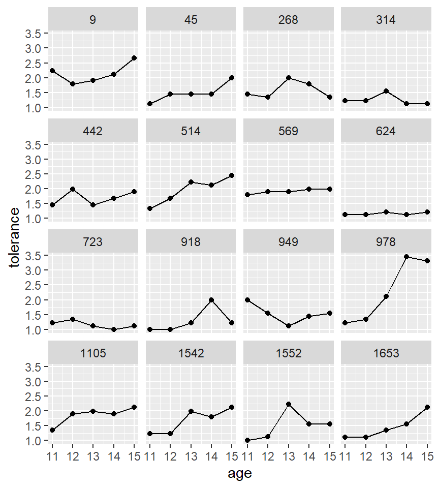
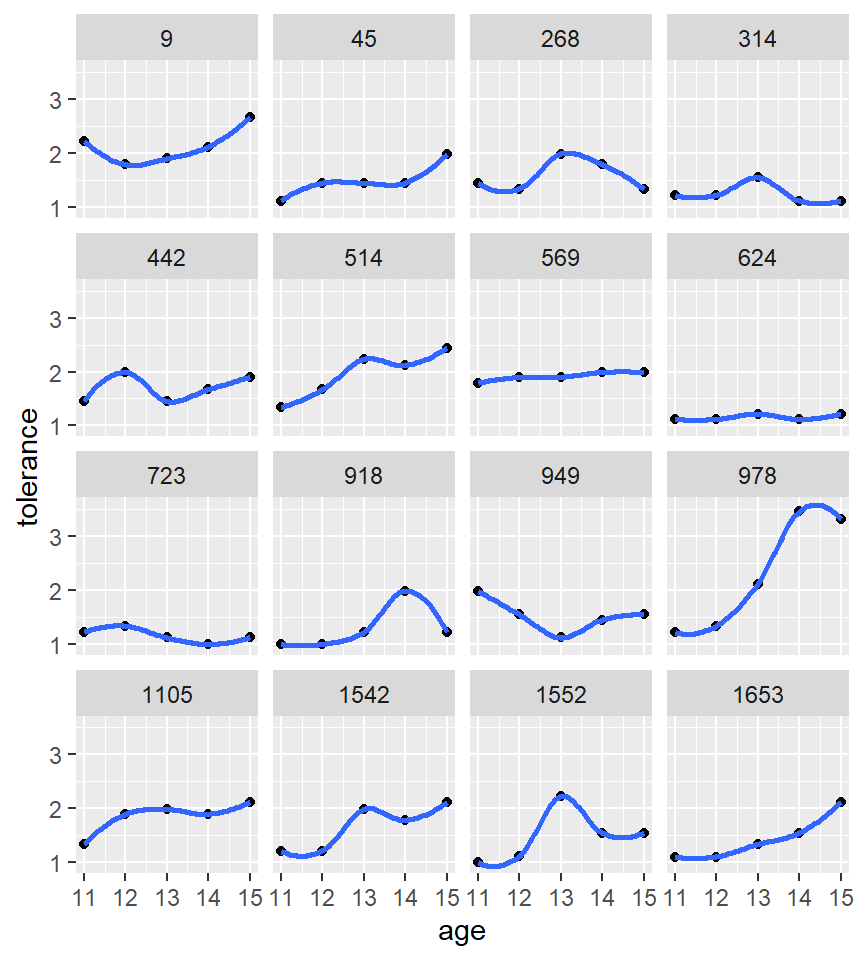
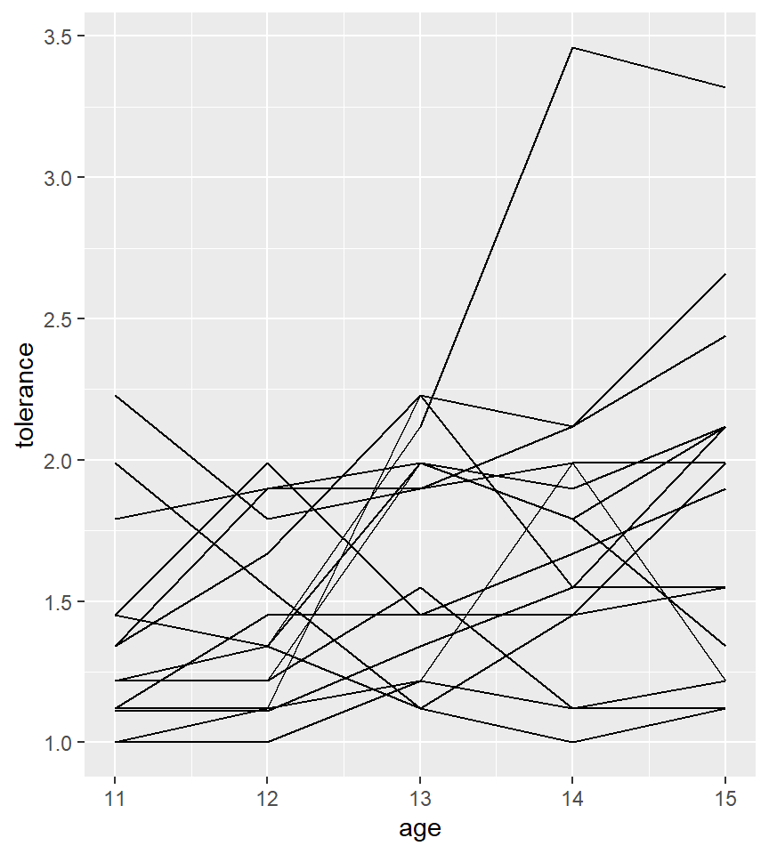

Capítulo 4 Visualización de datos longitudinales
Para ilustrar cómo visualizar datos longitudinales usaremos los datos que se encuentran en formato ancho obtenidos de UCLA web site. Este ejemplo pertenece a un estudio realizado en adolescentes en el que se ha medido su tolerancia a tener un comportamiento que se “desvia de lo habitual” usando 9 items (medidos en una escala de 1 a 4 que va de un comportamiento muy malo hasta para nada malo) que se resumen con la media del valor obtenido en cada uno de ellos. Además del sexo del adolescente, también se ha recogido una variable (“exposure”) que corresponde a la respuesta autoreportada por el adolescente a los 11 años de su exposición a tener un comportamiento que anómalo
Los datos podemos cargarlos de la forma habitual, pero teniendo en cuenta que se encuentran en formato “csv”. Notemos que no hace falta descargarlos en nuestro ordenador y cargarlos desde ahí, ya que la función read_csv acepta que los datos estén en un repositorio en la red (basta con indicar su URL).
library(tidyverse)
tolerance <- read_csv("https://stats.idre.ucla.edu/wp-content/uploads/2016/02/tolerance1.txt")
head(tolerance)# A tibble: 6 x 8
id tol11 tol12 tol13 tol14 tol15 male exposure
<dbl> <dbl> <dbl> <dbl> <dbl> <dbl> <dbl> <dbl>
1 9 2.23 1.79 1.9 2.12 2.66 0 1.54
2 45 1.12 1.45 1.45 1.45 1.99 1 1.16
3 268 1.45 1.34 1.99 1.79 1.34 1 0.9
4 314 1.22 1.22 1.55 1.12 1.12 0 0.81
5 442 1.45 1.99 1.45 1.67 1.9 0 1.13
6 514 1.34 1.67 2.23 2.12 2.44 1 0.9 Con los datos en este formato, podemos aprovechar para obtener algunas estadísticas descriptivas que pueden resultar de interés. Por ejemplo, podemos ver cuántos individuos tenemos en nuestro estudio simplemente ejecutando:
nrow(tolerance)[1] 164.1 Trayectorias
Para poder crear gráficos que nos informen sobre la evolución de la tolerancia entre individuos necesitamos que los datos estén en formato largo. Como hemos visto anteriormente, esto lo podemos realizar mediante
library(reshape2)
tolerance2 <- melt(tolerance, measure.vars=2:6,
variable.name = "age",
value.name = "tolerance")
# no nos olvidemos que nuestra variable edad
# debe de ser numérica
tolerance2 <- mutate(tolerance2,
age = str_remove(age,"tol")%>%
as.numeric())
head(tolerance2) id male exposure age tolerance
1 9 0 1.54 11 2.23
2 45 1 1.16 11 1.12
3 268 1 0.90 11 1.45
4 314 0 0.81 11 1.22
5 442 0 1.13 11 1.45
6 514 1 0.90 11 1.34Puesto que nuestras observaciones para cada individuo se presenta a distintas edades, por eso hemos llamado age a nuestra variable temporal.
Con los datos en este formato no resulta tan sencillo saber cuántos individuos estamos analizando. Podemos usar tidyverse para obtener esta información
tolerance2 %>%
distinct(id) %>%
nrow()[1] 16NOTA: Para aquellos que no realizaron el último curso de R en el que se explicó tidyverse, se puede consultar este material.
Podemos empezar por visualizar nuestros datos creando lo que se conoce como Empirical growth plots o que nos nuestra la secuencia de nuestra variable de interés a lo largo del tiempo para cada individuo. En nuestro paso pondremos age en el eje X y tolerance en el Y. Para ello utilizaremos la función geom_point() y para crear el panel individual para cada sujeto usaremos facet_wrap() ambas son funciones de la librería ggplot2.
library(ggplot2)
ggplot(tolerance2, aes(x = age, y = tolerance)) +
geom_point() +
facet_wrap(~id)Por defecto, ggplot2 mantiene las escalas de ambos ejes iguales en todos los paneles. Si queremos que sea distinto entre cada individuo, podemos modificar el argumento scales en la función facet_wrap().
Podemos añadir una línea para conectar los puntos usando geom_line()
ggplot(tolerance2, aes(x = age, y = tolerance)) +
geom_point() +
geom_line() +
facet_wrap(~id)
Sin embargo, a veces es recomendable utilizar otras aproximaciones que nos ayuden a visualizar mejor cuál es la trayectoria de cada individuo. Para ello, se puede utilizar otras aproximaciones como:
- suavizado no paramétrico
- funciones paramétricas
El suavizado paramétrico se puede llevar acabo usando un suavizado de tipo loess. Podemos usar esta opción mediante la función stat_smooth() y controlar el grado de suavizado con el argumento span.
ggplot(tolerance2, aes(x = age, y = tolerance)) +
geom_point() +
stat_smooth(method = "loess", se = FALSE, span = .9) +
facet_wrap(~id)
NOTA: El argumento se=FALSE sirve para que no pintemos la banda de confianza para la estimación no paramétrica.
Podemos visualizar las trayectorias usando un modelo paramétrico. El más sencillo sería un modelo lineal que podemos visualizar mediante el argumento method = 'lm'
ggplot(tolerance2, aes(x = age, y = tolerance)) +
geom_point() +
stat_smooth(method = "lm", se = FALSE) +
facet_wrap(~id)4.2 Spaghetti plots
También podemos visualizar todas las trayectorias en único gráfico mediante lo que se conoce como un spaghetti plot. Esta representación es muy útil cuando queremos visualizar muchos individuos. Para ello deberíamos usar el argumento group
ggplot(tolerance2, aes(x = age, y = tolerance, group = id)) +
geom_line()
También podemos añadir el perfil promedio
ggplot(tolerance2, aes(x = age, y = tolerance, group = id)) +
geom_line(col="grey") +
stat_summary(aes(group = 1), geom = "line", fun = mean, size=2)Podríamos obtener el mismo gráfico separado para hombres y mujeres usando de nuevo facet_wrap()
ggplot(tolerance2, aes(x = age, y = tolerance, group = id)) +
geom_line() +
facet_wrap(~male)NOTA: En ggplot2 podemos guardar un gráfico con un nombre y luego “reciclar” el gráfico añadiendo más código de la siguiente manera. Por ejemplo, puedo guardar el gráfico anterior en el objeto p
p <- ggplot(tolerance2, aes(x = age, y = tolerance, group = id)) +
geom_line(col="gray") +
facet_wrap(~male)y luego decirle que me añada el perfir promedio:
p + stat_summary(aes(group = 1),
geom = "line", fun = mean, size=2)